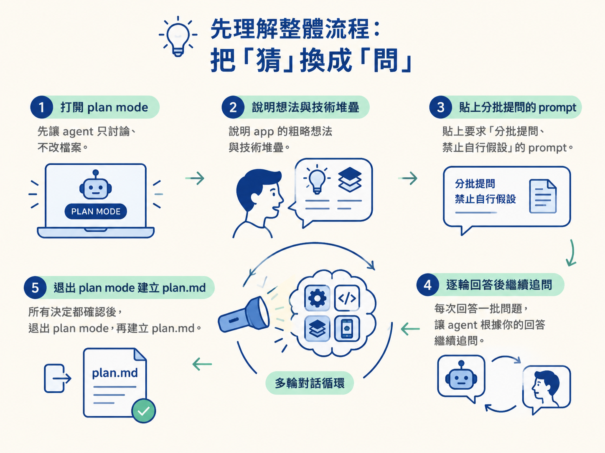
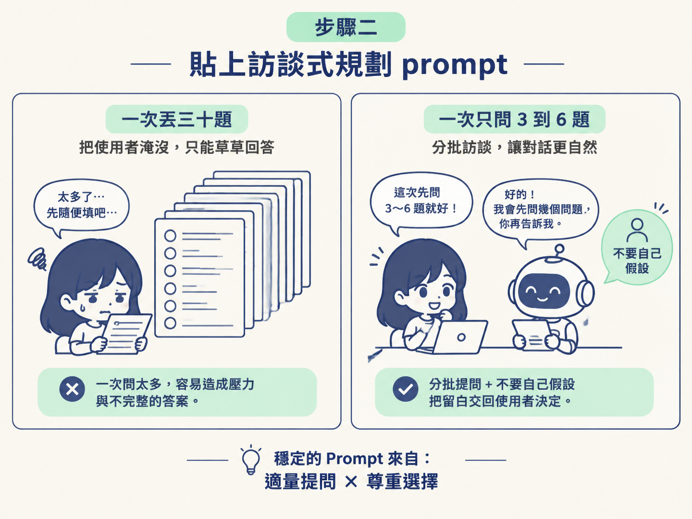
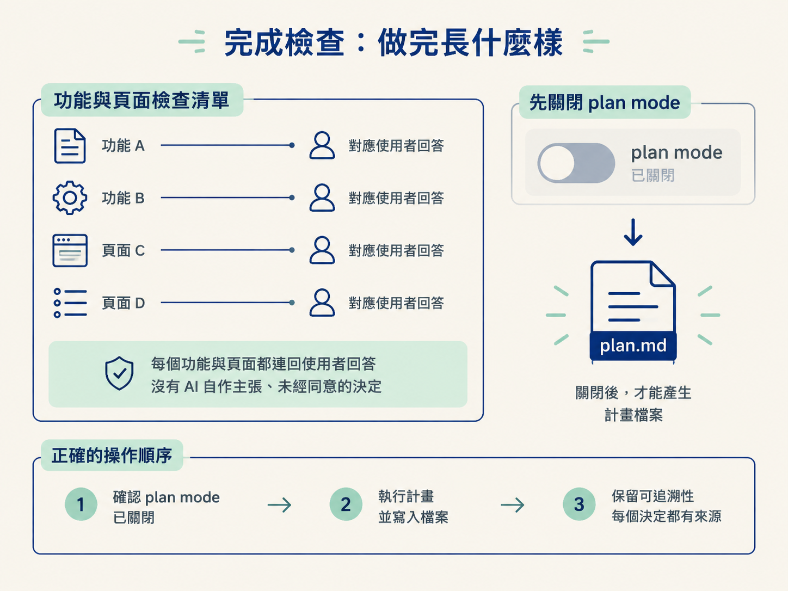

這一節的目標，是把腦中的 app 想法整理成一份可以執行的規劃素材。你會先打開 plan mode，再貼上訪談式規劃 prompt，讓 coding agent 分批提問；你則逐輪回答，交代清楚 idea、goals、features、pages、user flow 與 tech stack。
做完之後，你應該能檢查每個功能和頁面，確認它們都來自你的決定，而不是 AI 自己補上的猜測。最後，退出 plan mode，再把訪談結果整理成 plan.md。
動手前，先確認三件事：
上一節得到一個很實際的結論：需求留白時，AI 很容易自己猜。問題是，你也很難憑空把一個 app 的所有細節一次講完。很多決定平常只是藏在腦中，沒有被問到，就不會浮現出來。
因此，這次不要逼自己先變成規劃大師，而是讓 AI 擔任訪談者。整個流程像有人拿著手電筒，一格一格照出你腦中的 app：
plan.md。
plan mode 是 agent 的工作模式之一。在這個模式裡，它的工作是討論與規劃，不會直接動手修改檔案。不同工具的入口不完全相同：
開啟後，先把 app 的粗略描述告訴它。以課程中的熱量追蹤 app 為例，你可以說明：
這一步只是在提供背景，不要急著叫 agent 開始規劃。真正控制訪談方式的規則，會放在下一步的 prompt 裡。
天真的做法，是只丟一句「幫我規劃這個 app」，然後等 AI 自己補齊功能、頁面與流程。這種寫法看似省事，實際上會把大量決定偷偷交給 AI。
較穩定的做法，是明確要求它不要猜，改用分批訪談。請貼上下面這段 prompt：
我要做一個 mobile app。請你不要自己假設任何功能或頁面，
改用「訪談」的方式幫我規劃：
- 一次只問 3 到 6 個問題，依主題分批，一批問完等我回答再問下一批。
- 涵蓋這些主題：idea、goals、features、pages、user flow、tech stack。
- 如果我回答得不清楚，就針對那一點繼續追問。
等我回答完所有批次後，把完整的計畫寫進 plan.md。
現在先不要初始化 Expo 專案，也不要開始寫功能。這段 prompt 有兩個關鍵規則。
第一，要求 agent 一次只問 3 到 6 個問題。若一次丟出三十題，你很可能只會草草回答，訪談就變成填問卷，失去逐步釐清的效果。
第二，明確寫出「不要自己假設」。這會把需求中的空白變成問題，交回給你決定，而不是讓 AI 在你沒注意時替你做決策。

送出 prompt 後，agent 會開始提出第一批問題。像聊天一樣回答即可；一批回答完，它才會根據內容進入下一批。
問題通常會沿著六個規劃主題展開。實際回答時，請盡量誠實、具體，不要只回「都可以」或「之後再說」。你現在補充得越清楚，後面返工的機會就越少。
也不要忽略畫面細節。課程示範時，連首頁要顯示熱量條、橫向日期列、今日餐點清單，以及連續打卡天數都一併說明。這些細節看起來像桌上的零碎小物，但它們會直接影響 AI 最後規劃出什麼畫面。
如果你沒有說清楚，AI 可能會替你做決定；如果你把想法講具體，後面的規劃才會真正貼近你的 app。
訪談時，你很可能突然想起：「對了，個人頁的照片也要能修改。」這時不要把它硬塞進正在回答的題目裡，否則 agent 可能會誤以為那是當前問題的答案，讓訪談節奏變亂。
請在這類附帶請求前面加上 /by the way。這等於替補充內容貼上一張便利貼，告訴 agent：「這是額外想到的事，不是本題答案。」你可以補充需求，又不用中斷整場訪談、重新開始。
當所有批次都問完、你也回答完後，agent 應該會停止提問，開始整理完整規劃。這時請回顧整段對話，逐一檢查功能、頁面與流程。
一個可驗證的檢查點是：你找不到任何「AI 自己決定、而你從未同意」的功能或頁面。若還有這種地方，就再追問一輪，直到每個重要決定都能追溯到你的一句回答。
接著先注意一個操作上的警告：要建立 plan.md 之前，先確認 plan mode 已經關閉。以 Codex 為例，plan mode 開著時，agent 只會討論，不會產生檔案。你必須先退出這個模式，它才有辦法把計畫寫進檔案。

先確認 plan mode 已經關閉，再叫 agent 建立 plan.md。以 Codex 為例，plan mode 開著的時候，agent 只討論、不會產生檔案，你得先退出這個模式，它才有辦法把計畫寫進檔案。
訪談式規劃的做法，是「讓 AI 反問你」，而不是自己硬想。先開好 plan mode，貼上要求分批提問且不准假設的 prompt；接著一輪一輪具體回答，遇到臨時補充就用/by the way標記。直到對話裡沒有未經你同意的決定，再退出 plan mode，把結果寫成plan.md。真正花時間的規劃，通常就發生在這段對話裡。
這場訪談會逼你做出兩個重要決定：第一版要放多少功能；第二，要使用哪一套技術。這兩件事會直接影響你多久能做出一個「能動的 app」。下一節先處理第一個問題：如何把野心砍成一個做得完的 V1。